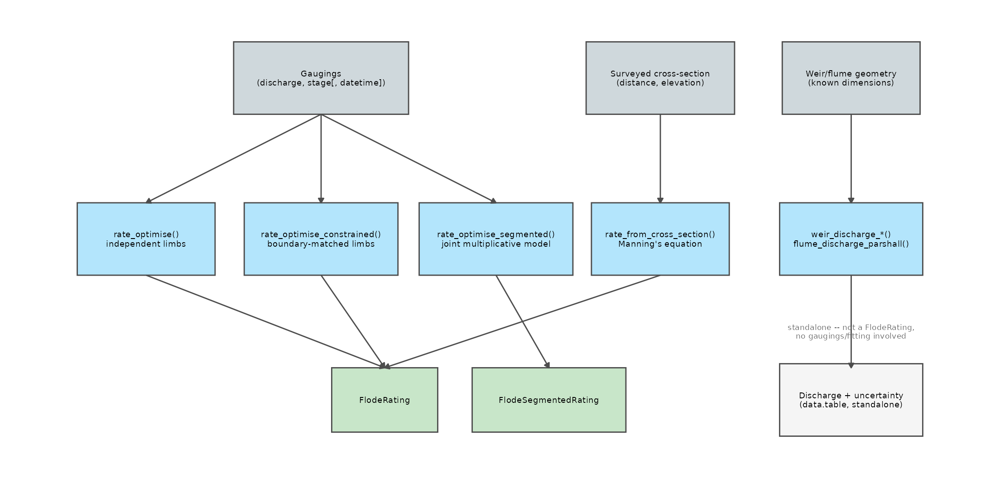
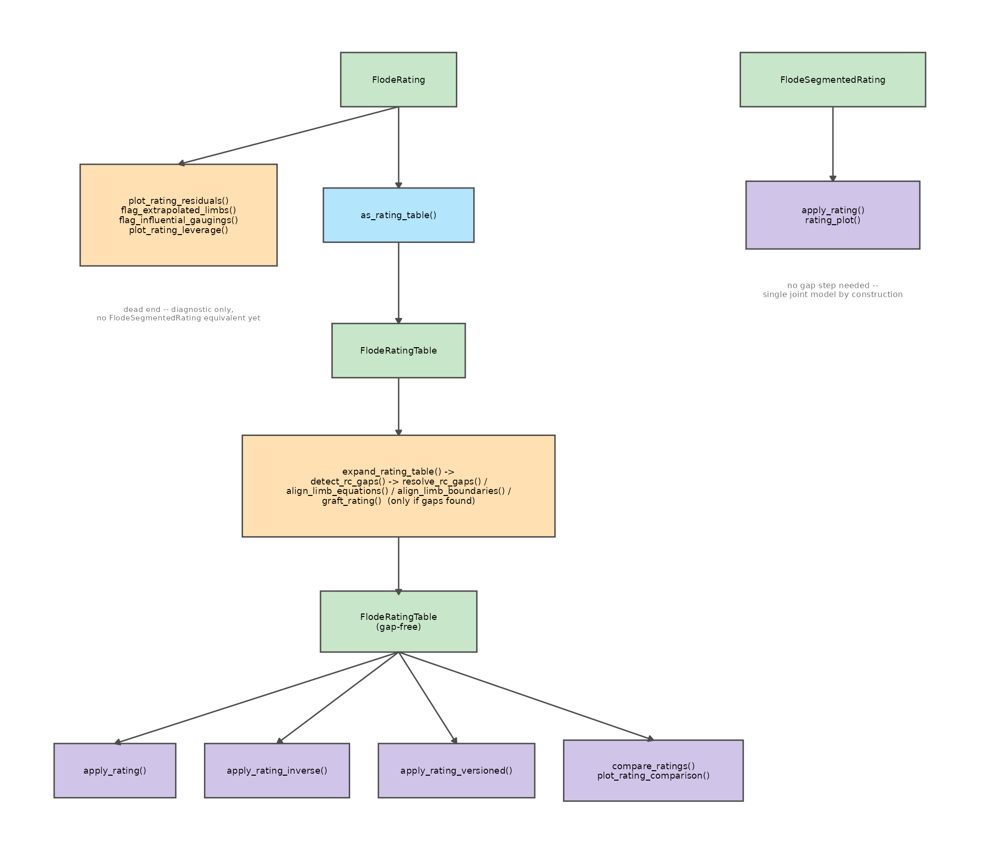

Rating Methods: How the Pieces Fit Together
Jonathan Payne, Environment Agency Flood Forecasting
September 2026
Source:vignettes/rating_methods_overview.Rmd
rating_methods_overview.RmdThis package started as one function, rate_optimise(),
and one vignette. It is now five ways to build a rating, several ways to
check one, and half a dozen ways to use one once you have it – each with
its own vignette going deep on its own corner. None of them, on its own,
shows how the corners connect. This vignette is that map: two flow
diagrams, read top to bottom, and the reasoning behind each arrow.
Throughout both diagrams: grey boxes are the data
you start with, blue boxes are functions that fit or
bridge between representations, green boxes are the S7
objects you actually hold at each stage, amber boxes
check or fix something, and purple boxes are what you
do with a finished rating. Nothing here replaces the vignette on any
individual box – every box names the function whose own documentation
and @examples you’d actually run.
Three ways to start
The first decision is not which function to call – it’s what you have. A station with a gauging history, a freshly-surveyed cross-section with no gaugings yet, and a calibrated weir all produce a rating (or a discharge estimate) by genuinely different routes.

You have gaugings. This is the default case and the
one most of the package assumes. Three functions read the same
(discharge_cms, stage_m) pair, and choosing between them is
a modelling decision, not a preference:
-
rate_optimise()– fits each limb independently. Simplest, most transparent, but adjacent limbs rarely meet exactly at their shared boundary (a “junction gap”), which the next section’s diagram picks up. -
rate_optimise_constrained()– the same independent-limb shape, but refit so adjacent limbs are forced to agree at each boundary as part of the fit itself, not as a separate step afterwards. -
rate_optimise_segmented()– a structurally different joint model (Hodson et al. 2024): one multiplicative expression across the whole range, so there is no junction to reconcile because there was never a junction. Seevignette("segmented_model_guide")for how the factors compose.
You have a surveyed cross-section but no gaugings.
rate_from_cross_section() derives a theoretical rating from
channel geometry alone via Manning’s equation, then hands the resulting
synthetic (stage, discharge) series to
rate_optimise() internally – which is why its output is an
ordinary FlodeRating, distinguished only by
@provenance$source. Useful at an ungauged or
newly-installed site, or as a physically-grounded sanity check on what a
surveyed section implies about curve shape. See
vignette("weir_flume_guide")’s sibling discussion and
?rate_from_cross_section.
You have a weir or flume with known dimensions. The
four
weir_discharge_*()/flume_discharge_parshall()
functions compute discharge directly from the structure’s own published
equation and geometry, with GUM-style propagated uncertainty – no
gaugings, no rate_optimise() call, no
FlodeRating at the end of it. This is the one box in the
diagram that doesn’t feed into anything else in this package: it’s a
standalone calculator, not a fitting pipeline. In principle a
structure’s computed discharge at a given head could be treated as one
very-high-confidence synthetic gauging and blended into a
rate_optimise() call the way
rate_from_cross_section() blends Manning-derived points –
the package doesn’t automate that today; see
vignette("weir_flume_guide") for the equations
themselves.
From a fit to a product
Once you hold a FlodeRating or
FlodeSegmentedRating, what happens next genuinely differs
between the two – not because one is more finished than the other, but
because a joint segmented model has no junction to check and no natural
table form the way independently-fitted limbs do.

The FlodeRating path is the fuller one,
because independently-fitted limbs create two problems a joint model
doesn’t have: you might want to know which gaugings are quietly steering
the fit (plot_rating_residuals(),
flag_extrapolated_limbs(),
flag_influential_gaugings(),
plot_rating_leverage() – see
vignette("leverage_influence_guide")), and adjacent limbs
may disagree at their shared boundary (as_rating_table()
bridges to a FlodeRatingTable, then
expand_rating_table() and detect_rc_gaps()
find any junction gap, closed by whichever of
resolve_rc_gaps(), align_limb_equations(),
align_limb_boundaries(), or graft_rating()
fits the situation – rating_curves_guide.Rmd’s “The
junction gap problem” section covers all four). What comes out the far
end is a gap-free FlodeRatingTable, which is what every
application function downstream actually reads.
The FlodeSegmentedRating path is shorter today,
not incomplete by design but genuinely narrower.
apply_rating() and rating_plot() both have
FlodeSegmentedRating methods and work directly on the fit –
no bridging step, because there’s no junction to check. What it does
not have, as of this vignette, is any of: the four diagnostic
functions above (all four check
S7_inherits(fit, FlodeRating) and error otherwise – see
?flag_influential_gaugings), as_rating_table()
(no method registered for FlodeSegmentedRating), or,
downstream of that, apply_rating_inverse(),
apply_rating_versioned(), or
compare_ratings(), all of which expect a
FlodeRatingTable. If you need any of those on a segmented
fit today, the practical workaround is evaluating the fit’s own equation
(fit@coefficients,
vignette("segmented_model_guide")’s multiplicative-factor
formula) across a stage sequence by hand and working from the resulting
table directly.
Coefficient uncertainty runs beside this diagram, not through
it. bootstrap_to_table() and
apply_rating_interval() (or, for a quick closed-form
alternative, the
C_se_asymp/a_se_asymp/n_se_asymp
columns rate_optimise() always populates) work directly
from a FlodeRating’s own @bootstrap/refit
machinery, independent of whether the table above is gap-free yet –
rating_curves_guide.Rmd’s “Coefficient uncertainty” section
covers that pipeline on its own terms.
Where to go next
This vignette is deliberately shallow on every individual box – it exists to show the shape of the whole, not to replace any one part of it. Depending on which box you’re standing at:
-
vignette("rating_curves_guide")– the full introductory walkthroughrate_optimise()itself, the junction-gap problem, and coefficient uncertainty in depth. -
vignette("segmented_model_guide")– howrate_optimise_segmented()’s multiplicative factors actually compose, with diagrams. -
vignette("weir_flume_guide")– the weir/flume equations andrate_from_cross_section()’s Manning calculation, with structure diagrams. -
vignette("leverage_influence_guide")– which gaugings are quietly steering aFlodeRatingfit, in plain English. -
vignette("n_bounds_guide")– reading a channel cross-section into a startingn_boundsforrate_optimise()/rate_optimise_constrained(). -
vignette("objective_guide")andvignette("recency_weighting_guide")– two waysrate_optimise()’s own fit can be steered, beyondn_bounds:objective = "relative", andage_halflife. -
vignette("s7_objects_guide")– what@-access,S7_inherits(), and the@status/@previousaudit chain actually buy you, for every green box in both diagrams above.